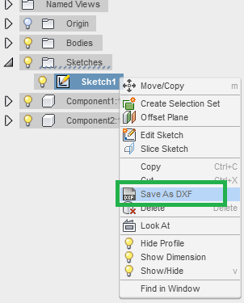
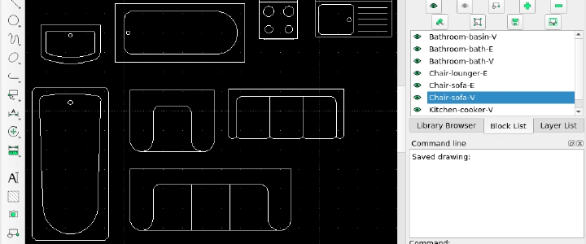

So, you want to print faster eh?
Can't wait an hour?
Is your Part 2-5 mm thick?
Even if it isnt, Laser cutting is for you!
So how do i lasercut?
that brings us to our first part
DXF files is the file format that we were taught to use for laser cutting.
For the purpose of the lesson, we were told to design a box
I just made a relatively simple one, with walls that were 4 mm thick
On the left bar you should see the sketches you have done, you click on the one containing the outline profile of your part, if you dont have it, just start a new sketch on a surface and project geometry the profile instead and save the sketch.
Now, you hover over the sketch name and right click and save it as a DXF file.
After you save the DXF file, it is reccommended that you first check the file using a drawing viewer program. The program i use is LibreCad, there were a few other options, but i find librecad the easiest to use.
You can use LibreCad to edit the sketch, in my case i just used it to drag and drop multiple drawings into a sketch, and arrange it to preprare for printing. something like the picture below
But that didnt matter at all since we didnt print anything we made, the lesson was mostly a demo
The actual printer in the lab is quite large so for the most part i didnt worry about having to print parts in multiple batches in the future
1. Remember to design your part to be able to be cut on a 2D plane, i made the mistake of making one of my pegs on the box at an angle, and i had to restart.
if you would look at the sides, you can see i accidentally made the pegs a shape that was impossible for the printer to replicate, the laser cutter isnt the same as a 3D printer, so dont design objects in the same way as you would a 3D printer.
2. Design your part with parametric modelling, this is a good habit in general when using fusion, as its one of the advantages that makes fusion so distinct from other 3D design software.
However i feel this is especially important for laser cut parts as usually you wont be able to find the precise thickness wood/ arcylic you want for your part.
Maybe i only face this problem in a school enviroment, but its a good habit nonetheless.
i wasted lots of time redesigning my part because i realised the laser cutted pieces wouldnt mesh with one another if they were a different thickness from the one i drew in fusion.
3. Ensure your drawing has sufficient dimensional tolerences, what do i mean by this? Well, when the laser cutter cuts the material, it actually removes slightly more than needed, the edge of your part gets shaved off abit, i was told it was a 0.3-0.2 mm loss of material from each side, so the total length could get reduced by up to 0.6mm in total. This makes press fitting a nightmare as you no longer have that snug fit.
Its always better to have abit extra material on your part as compared to lacking material, as you could always just sand it down.
4. Be patient when removing parts, this was entirely a me problem, but i got too excited about the prospect of my first laser cut design being so close to complete i tried to rip it out of the wood by hand. B a d M i s t a k e . As expected, the part just broke. Luckily the teacher was kind enough to print me a new copy.
if the part sticks to the wood, just slowly turn it to the side that wasnt cut, and use a penknife to slowly and carefully cut through the wood
If it is arcylic, i would suggest going for an extra cut if the pieces dont come off, however you need to be prepared for the part to lose an extra 0.2mm to 0.3mm in overall length from the extra cut. The material loss isnt as bad as the first time as youre simply just cutting over, but it is still removing extra material.